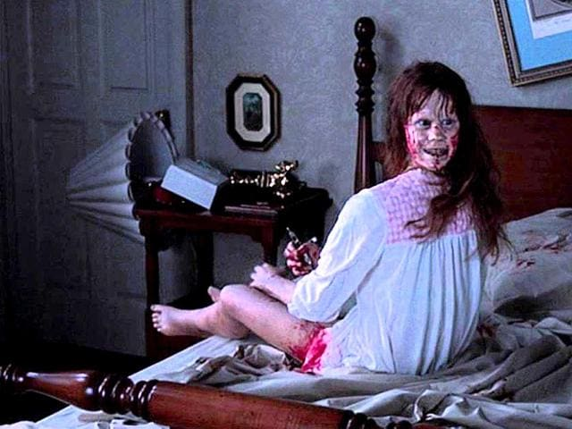
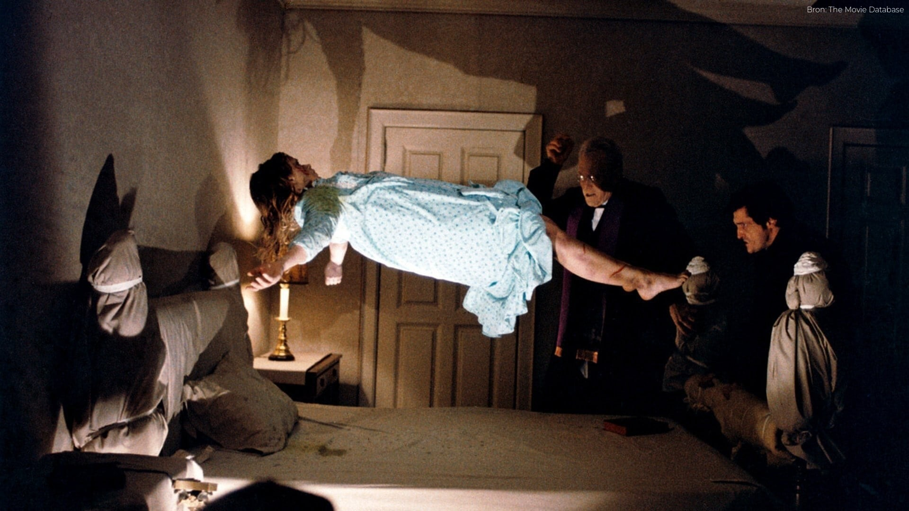

The Exorcist is a 1971 novel in the horror genre by William Peter Blatty. It tells the story of the possession of a young girl named Regan MacNeil. In 1973, the book was turned into a critically acclaimed film that spawned a number of sequels.
In northern Iraq, an elderly priest named Lankester Merrin finishes an archeological excavation of a tomb and returns to America, shaken by a premonition. While finishing a film shoot with the director Burke Dennings, actress Chris MacNeil is living temporarily in Georgetown with her daughter Regan, her housekeepers (an elderly Swiss couple named Willie and Karl), and her secretary Sharon Spencer. Chris hears strange sounds emanating from Regan’s bedroom and notices furniture and items of clothing seeming to move around the house. Chris discovers that Regan has been playing with a Ouija board to talk to an invisible friend named Captain Howdy.
Regan becomes angry and restless. Chris seeks out medical help, and Dr. Klein recommends further tests. Chris cannot explain the strange occurrences around the house; she also learns that a number of her business investments have soured. She hosts a dinner party for friends, and Regan appears just as the party is over. She tells one of the guests that he is going to die and then urinates on the rug. Embarrassed, Chris takes her daughter to bed. After the guests leave, Chris hears Regan scream and finds her writhing on her shaking bed. Father Karras, a Jesuit priest and a psychiatrist, works at a university as a counselor, where he advises younger priest, while hiding worries about his own diminishing faith. He learns about a series of desecrations in local churches.
Regan’s condition worsens: She swears, spits, and struggles to remember anything that happens. Regan’s problems are beginning to impinge on Chris’s professional career, so Chris calls Dr. Klein and a neurologist to the house; there, they discover Regan screaming obscenities while masturbating. Chris becomes more desperate as the doctors struggle to find an explanation. Under hypnosis, Regan claims to be possessed by a demon who wishes to harm her. The doctors recommend sending Regan to a clinic in Dayton and Chris agrees. Burke Dennings is found dead under Regan’s window. Detective Kinderman begins investigating Burke’s death, linking it to the desecrations at the churches. The violent way in which Burke’s neck was twisted all the way around leads Kinderman to suspect possible foul play. Kinderman approaches Karras and they discuss the occult. Kinderman grows suspicious of Chris’s housekeeper Karl after finding a flaw in Karl’s alibi.
After Regan returns home, Chris becomes increasingly desperate. She now believes that an exorcism might be the only solution. She tries to convince Karras to exorcise Regan. He is dismissive and warns of the large amount of evidence required by the church to conduct an exorcism. But after seeing the possession firsthand, he begins collecting evidence. The investigation consumes Karras as he searches for any rational explanation for what is happening to Regan. Eventually, Karras requests an exorcism for Regan; he now must await the arrival of Father Merrin, who has conducted the ritual. Merrin arrives at the house and immediately begins. The demon recognizes Merrin, who confesses that he has fought it once before. Karras and Merrin battle the demon for many sleepless days. With Regan on the verge of death, Karras returns briefly to his apartment, where Kinderman meets him to explain that he knows Regan killed Burke, but will not prosecute.
Back at the MacNeil house, Karras finds Merrin dead. He confronts the demon and challenges it to possess him. After a shattering sound from upstairs, Chris finds Karras sprawled under Regan’s window and Regan free from the demon. As an ambulance arrives, a fellow priest takes Karras’s last confession before Karras dies. Six weeks later, Regan and Chris move back to Los Angeles.